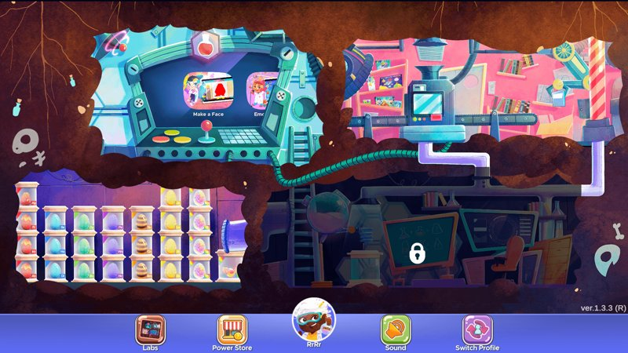
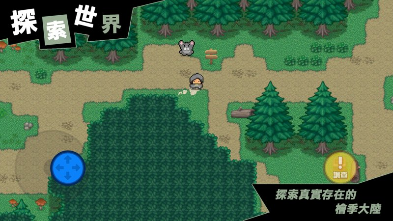
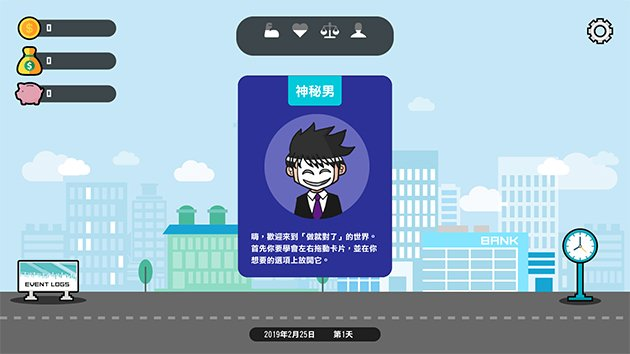
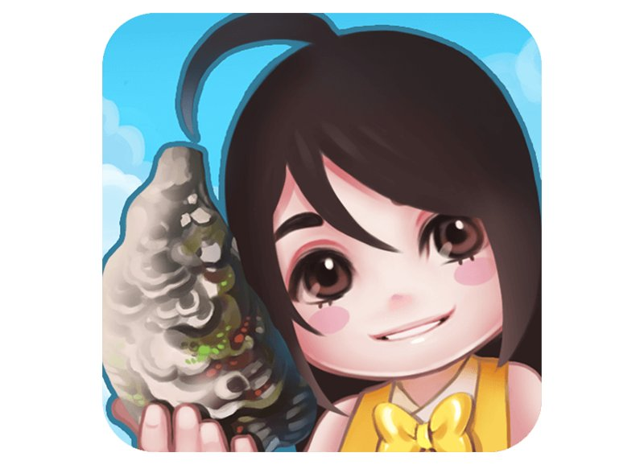
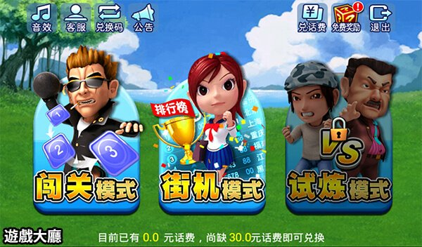

大頑遊戲
遊戲開發工程師（外包合作） 進行中- 目前以外包形式合作中，以遊戲前端開發為主。
- 運用 AI 工具協助開發，將工作範圍延伸至後端與後台。
SZUWEN CHEN
遊戲程式開發 / 遊戲設計
我是陳嗣文，自 2018 年起以接案形式工作，內容著重在遊戲設計以及相關的程式開發，能夠針對專案預算及現有資源提出 CP 值最大化的內容。在此之前於鈊象電子任職三年半，負責遊戲前端製作、後端資料串接與技術研究；接案後則多次以製作人身份兼任企劃與主程式，從規劃到交付完成整款遊戲。
PAGE 1 / 2

2023遊戲主程式
教導孩童認識情緒的教育型遊戲。製作其中一款小遊戲，並負責整個平台的串接整合：遊戲 Flow、影片串流、進度及行為紀錄、帳號管理流程、第三方登入；同時參與產品企劃與策略討論。

2021製作人 / 企劃 / 程式 / 美術整合
以學習會計為主的 RPG 教育遊戲。負責整體內容規劃與程式撰寫（Unity TopDown Engine），並自製角色點陣圖、頭像與 Icon，同時與計劃主持人進行學術方面的討論與迭代。

2019製作人 / 主企劃 / 主程式
以經營決策為主的 AVG 教育遊戲。玩家翻開事件卡後左滑或右滑做出決策，決策會改變人格參數，低於標準值則經營結束。

2019製作人 / 主企劃 / 主程式
體驗七股採蚵文化後發想的遊戲，以類似 Tap 的反應力玩法，帶玩家經歷從採蚵少女到青蚵嫂的生命故事。
前端工程師
已上架 Android 與 iOS 的博弈遊戲平台。負責平台架構規劃、平台功能製作、連線功能接駁、遊戲動態效果設計與規格優化。

2014–15前端工程師
以「弱連網」架構製作的棋牌遊戲，含劇情闖關、街機與試煉模式。負責前端功能製作、連線功能接駁、動態效果設計與規格提案。
軍團約 70 人，任內軍團戰力為全服最強。除了維持國內的制度和秩序，還要和另外兩國的領導者進行外交以維持伺服器的和平，是在日常有工作的情況下兼顧的領導與談判經驗。
負責外交、內政與戰略規劃。
將電玩過程剪成有趣的影片供大家欣賞。
PAGE 2 / 2